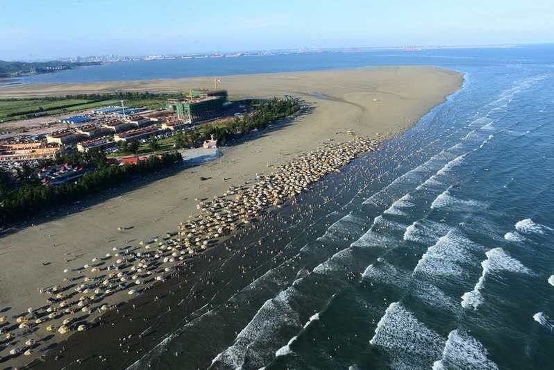
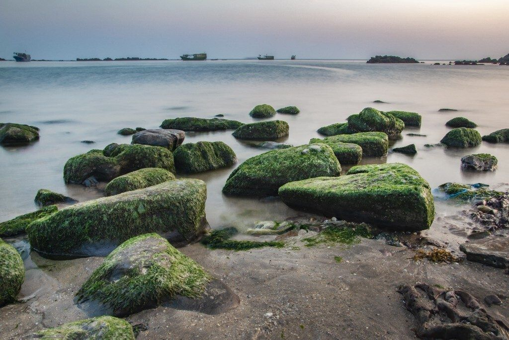

封面
总览 · 怎么玩
自驾 vs 跟团
行前·交通·住
短程 2天
中程 3-4天
长程 5-6天
东兴国门
美食清单
避坑提示

FANGCHENGGANG · SEA&BORDER
防城港
海边 · 边关 · 森林 · 可跨越南
白浪滩
怪石滩
万尾金滩
东兴国门
越南芒街
广西 · 防城港
A5 口袋手册
· 2-6天
1
/ 10
防城港
总览 · 怎么玩
一套「海+边+森」
How to Plan
2天
短程
江山半岛海岸核心
白浪滩+怪石滩+金滩
3-4天
中程
海岸 + 东兴国门 + 京族
节奏从容，可跨芒街
5-6天
长程
+ 十万大山森林 / 钦北 / 越南
山海跨国全点亮
TIP
海
＝江山半岛白浪滩（黑沙白浪）、怪石滩（海上赤壁）、万尾金滩（京族三岛）；
边
＝东兴国门、越南风情；
森
＝十万大山森林公园＋布透温泉。靠自驾车程串联。
TIP
防城港比三亚人少、比热门岛省，主张「慢生活」——别赶，才玩得出味道。
2
/ 10
防城港
自驾 vs 跟团
自驾，还是跟团？
Drive or Group
🚗
自驾（推荐）
江山半岛全线滨海路，白浪滩→怪石滩→金滩随走随停；防东铁路可「高铁到市+当地租车」。
🚌
跟团/一日游
无车选市区或南宁一日团（白浪滩+怪石滩+金滩+东兴口岸打包约¥160–430起）；跨境去越南跟团最省心。
🧭
建议
纯看海→自驾；顺带越南→跨境部分跟团。可自驾到东兴，再报当天往返芒街团。
💰
花费参考
人均约140–300元/天；住宿市区约150–250、海边民宿250–450+/晚；海边景点多免费。
TIP
白浪滩等免费，相关项目（沙滩车、摩托艇、跟拍）
先问价再玩
，别理散乱揽客。
3
/ 10
防城港
行前·交通·住
出发前，记住
3 件事
Before You Go
🚄 怎么去
高铁
：防城港北站，南宁约1h；
防东铁路
通达东兴口岸
飞机：南宁吴圩机场，再高铁/自驾1–2h
自驾：滨海公路（G228）或钦防高速，可环线
📅 最佳时间
四季可玩
，夏秋海边最旺、冬春温和（20℃+暖冬）
赶海、观豚
先查潮汐与天气
☀️ 防晒装备
海边紫外线强：
防晒霜、墨镜、帽子
必备
上礁石滩/滩涂穿
防滑涉水鞋
TIP
市内打车方便；去白浪滩、怪石滩建议
租车或报一日团
（点与点20–70分钟）。
4
/ 10
防城港
短程 2天
短程 · 2天
快·海岸核心
D1 白浪滩
→
怪石滩日落
→
D2 万尾金滩
→
西湾
D1 江山半岛一线
白浪滩
黑沙白浪、免费24h，上午光好人少，退潮可赶海
怪石滩
「海上赤壁」海蚀礁石，日落机位在西侧栈道/海礁
顺访
白龙古炮台 · 爱心树
D2 京族滨海
万尾金滩
京族三岛，退潮赶海、体验高跷捕鱼/拉大网
下午
西湾绿道
骑行/登仙人山俯瞰港口
TIP
2天只玩海岸，适合周五晚到、周日起程；
赶海按退潮时间
（约退潮后1–2h最佳）。
白浪滩

怪石滩
5
/ 10
防城港
中程 3-4天
中程 · 3-4天
海+边双响
D1 江山半岛精华
白浪滩上午踏浪 → 下午怪石滩+白龙古炮台 → 看日落，宿金滩民宿
D2 金滩+京族文化
上午赶海＋京族拉大网/高跷捕鱼 → 下午
京族博物馆
（中国唯一海洋民族）→ 傍晚日落
D3 东兴国门+芒街(可选)
东兴国门景区（一桥/二桥口岸、中越友谊大桥、侨批馆、万众市场买越南咖啡腰果）→ 华美达33楼看对岸芒街灯火
TIP
D3想轻松可去
簕山古渔村
；京族
哈节
逢农历六月初九后举办，赶上了更出彩。
6
/ 10
防城港
长程 5-6天
长程 · 5-6天
山海跨国
D1 江山半岛
→
D2 东兴/芒街
→
D3 十万大山·温泉
🌲 十万大山 · 温泉
上思十万大山国家森林公园
「中国氧都」、金花茶、徒步
布透温泉
叠瀑蓝色梯田温泉，洗去海风
🔄 A线 加钦州/北海
钦州三娘湾
中华白海豚之乡，出海观粉豚（船票约¥120）
钦州八寨沟雨林·老街·刘永福故居；
北海银滩·老街
顺滨海风景道东行
🔄 B线 加越南2-3天
东兴过境 → 芒街 →（可选）下龙湾乘船出海、夜市
TIP
长程把海边森林跨国全点亮；
行程拉长记得留一两个半天放空
，别把海边玩成赶场。
7
/ 10
防城港
东兴国门 · 越南
一脚出境
· 越南风情
Dongxing · Vietnam
📌 东兴国门景区
一桥/二桥口岸
、中越友谊大桥、侨批馆
万众批发市场买
越南咖啡、腰果
伴手礼
华美达33楼登高看
对岸芒街灯火
🇻🇳 去不去？
想「顺路出国」就去，性价比高、当天可回；只是看海也不完整不需要非去
芒街
一过北仑河即达，逛市集、喝滴漏咖啡、吃春卷粉
下龙湾
「海上桂林」世界自然遗产，需专门2–3天
TIP
出境需
护照+签证
（或边境通行证/团队免签，以口岸当日为准）；
跨境跟团最省心
，别信口岸外黑揽客。
东兴国门
8
/ 10
防城港
美食清单
防城港
· 吃什么
Local Flavors
TIP
现捞海鲜
选明码标价餐馆、避开模糊计价；可让渔民代加工自己的赶海所得。
🦐
现捞海鲜
企沙海港市场现捞现加工，皮皮虾、花蟹、大蚝、沙虫是招牌
🪱
沙虫 & 泥丁
防城港特色「沙虫之都」，煮汤、爆炒、炖蛋皆鲜
🍜
本地粉
海鲜粉、牛腩粉、猪脚粉、螺蛳粉——早夜宵靠它
🌮
京族簸箕宴 · 炒米粉
京族风味与滨海小吃的交织
☕
越南滴漏咖啡
东兴边境易买越南咖啡与腰果
TIP
夜市小吃：
炸虾饼、炸春卷、烤生蚝、酸嘢、糖水
——西湾夜市/北港故里吃到爽。
9
/ 10
防城港
避坑提示
看清这些，玩得更安心
Stay Safe
💰
海边项目先问价
沙滩车、摩托艇、跟拍先询价再玩，别理黑揽客
🌊
赶海看潮汐
退潮后1–2h最佳，涨潮及时撤，礁石湿滑防滑鞋
🛂
出境走正规
为避免口岸黑揽客，跨境选正规旅行社、证件齐全
🪨
礁石滩防滑
怪石滩、滩涂穿防滑涉水鞋
🦉
潮汐观豚
三娘湾观粉豚受天气影响，出海前查航讯
⚠️
紧急
紧急拨 110 / 120；消费纠纷拨 12345
防城港「WorldStip」祝你看海愉快 🌊
10
/ 10
WorldStip · 防城港 · 白浪滩 / 怪石滩 / 万尾金滩 / 东兴国门 / 京族 · 数据以景区当日公示为准
Insta360
记录美好
记录美好生活
相机指南 · CAMERA GUIDE